Deaths - Cardiovascular diseases - Sex: Both - Age: All Ages (Percent)
Deaths - Neoplasms - Sex: Both - Age: All Ages (Percent)
Deaths - Drowning - Sex: Both - Age: All Ages (Percent)
Deaths - Maternal disorders - Sex: Both - Age: All Ages (Percent)
Deaths - Chronic respiratory diseases - Sex: Both - Age: All Ages (Percent)
Deaths - Alcohol use disorders - Sex: Both - Age: All Ages (Percent)
Deaths - Drug use disorders - Sex: Both - Age: All Ages (Percent)
Deaths - Fire, heat, and hot substances - Sex: Both - Age: All Ages (Percent)
Deaths - Environmental heat and cold exposure - Sex: Both - Age: All Ages (Percent)
Deaths - Exposure to forces of nature - Sex: Both - Age: All Ages (Percent)
Conflict (percent)
Terrorism (percent)
Deaths - Digestive diseases - Sex: Both - Age: All Ages (Percent)
Deaths - Diabetes mellitus - Sex: Both - Age: All Ages (Percent)
Deaths - Lower respiratory infections - Sex: Both - Age: All Ages (Percent)
Deaths - Neonatal disorders - Sex: Both - Age: All Ages (Percent)
Deaths - Diarrheal diseases - Sex: Both - Age: All Ages (Percent)
Deaths - Road injuries - Sex: Both - Age: All Ages (Percent)
Deaths - Cirrhosis and other chronic liver diseases - Sex: Both - Age: All Ages (Percent)
Deaths - Tuberculosis - Sex: Both - Age: All Ages (Percent)
Deaths - Chronic kidney disease - Sex: Both - Age: All Ages (Percent)
Deaths - Alzheimer’s disease and other dementias - Sex: Both - Age: All Ages (Percent)
Deaths - Parkinson’s disease - Sex: Both - Age: All Ages (Percent)
Deaths - HIV/AIDS - Sex: Both - Age: All Ages (Percent)
Deaths - Acute hepatitis - Sex: Both - Age: All Ages (Percent)
Deaths - Self-harm - Sex: Both - Age: All Ages (Percent)
Deaths - Malaria - Sex: Both - Age: All Ages (Percent)
Deaths - Interpersonal violence - Sex: Both - Age: All Ages (Percent)
Deaths - Nutritional deficiencies - Sex: Both - Age: All Ages (Percent)
Deaths - Meningitis - Sex: Both - Age: All Ages (Percent)
Deaths - Protein-energy malnutrition - Sex: Both - Age: All Ages (Percent)
Deaths - Enteric infections - Sex: Both - Age: All Ages (Percent)
Afghanistan
AFG
1990
24.63
6.35
0.75
1.45
3.26
0.04
0.05
0.18
0.10
0.00
0.932
0.0061204
2.75
1.16
13.05
8.57
2.33
2.28
1.47
2.56
2.04
0.61
0.20
0.02
1.64
0.38
0.05
0.84
1.15
1.19
1.13
2.54
Afghanistan
AFG
1991
23.58
6.11
0.72
1.49
3.14
0.04
0.05
0.17
0.06
0.70
2.044
0.0340225
2.65
1.10
12.73
8.89
2.56
2.32
1.41
2.46
1.93
0.59
0.19
0.02
1.60
0.39
0.10
1.04
1.12
1.15
1.10
2.78
Afghanistan
AFG
1992
22.33
5.86
0.73
1.59
2.99
0.04
0.06
0.17
0.02
0.30
2.408
0.0234631
2.56
1.03
13.18
9.63
2.95
2.45
1.36
2.39
1.81
0.56
0.18
0.02
1.60
0.41
0.12
1.10
1.17
1.19
1.16
3.17
Afghanistan
AFG
1993
21.27
5.60
0.75
1.63
2.86
0.04
0.06
0.18
0.02
0.10
NA
NA
2.47
0.97
13.84
9.92
3.64
2.52
1.31
2.33
1.71
0.53
0.17
0.02
1.60
0.42
0.05
1.15
1.26
1.25
1.24
3.87
Afghanistan
AFG
1994
20.37
5.34
0.75
1.59
2.75
0.04
0.06
0.17
0.02
0.07
4.296
0.0084545
2.37
0.92
13.83
9.64
3.40
2.48
1.25
2.26
1.63
0.50
0.16
0.03
1.58
0.41
0.09
1.18
1.28
1.25
1.26
3.62
Afghanistan
AFG
1995
20.32
5.31
0.77
1.63
2.76
0.04
0.06
0.18
0.02
0.16
2.557
0.0018805
2.37
0.91
13.82
9.62
3.89
2.52
1.25
2.28
1.61
0.50
0.16
0.03
1.60
0.42
0.07
1.20
1.27
1.26
1.25
4.11
Data Cleaning
The dataset is in a wide format. It has 35 columns that include Entity (country), Code (country code), Year and then all the death causes by percentage of the total deaths for that country and year. For the analysis, the data is preferred in a long format (also called tidy format), so I will begin by converting the data to a long format and divide it between countries and regions, since the dataset also contains aggregated data by region.
Another thing I will do in this data cleaning step is replace some death causes for a more descriptive and short name, this is done with the death_causes_map vector, which maps the new names (on the left side) with the old ones (on the right side).
death_causes_map <-c("Cancers"="Neoplasms","Suicide"="Self-harm","Homicide"="Interpersonal violence","Diabetes"="Diabetes mellitus","Road incidents"="Road injuries","Alzheimer's disease"="Alzheimer's disease and other dementias","Drugs disorders"="Drug use disorders","Liver diseases"="Cirrhosis and other chronic liver diseases","Kidney diseases"="Chronic kidney disease","Alcohol disorders"="Alcohol use disorders","Fire"="Fire, heat, and hot substances","Heat and cold exposure"="Environmental heat and cold exposure")income_categories <-c("Low Income","Lower Middle Income","Upper Middle Income","High Income")mortality_long <- mortality %>%pivot_longer(cols =contains("Percent"),names_to ="death_cause",values_to ="percent_affected") %>%mutate(death_cause =str_split(death_cause, " - ")) %>%unnest(death_cause) %>%filter(!str_detect(death_cause, "Deaths|Sex|Age")) %>%mutate(death_cause =str_remove(death_cause, " \\(.*"),percent_affected = percent_affected /100,death_cause =fct_recode(death_cause, !!!death_causes_map) ) %>% janitor::clean_names() %>%filter(!is.na(percent_affected))mortality_by_country <- mortality_long %>%filter(!is.na(code), entity !="World") %>%rename(c("country"="entity", country_code ="code"))mortality_by_region <- mortality_long %>%filter(is.na(code) | code =="OWID_WRL") %>%select(region = entity, code, year, death_cause, percent_affected) %>%mutate(region =str_remove(region, "World Bank "),region =fct_relevel(region, income_categories))mortality <- mortality %>% janitor::clean_names()rm(mortality_long)
Exploratory Data Analysis
Death causes proportions presumably have different distribution around the world. First, I want to get an overall view of the global proportions. This is why I will begin the analysis with the dataset of death causes aggregated by regions. Here is a sample of the data
This first plot shows the 20 more common global death causes in 2019
mortality_by_region %>%filter(code =="OWID_WRL", year ==2019) %>%slice_max(percent_affected, n =20) %>%mutate(death_cause =fct_reorder(death_cause, percent_affected)) %>%ggplot(aes(percent_affected, death_cause)) +geom_col() +scale_x_continuous(labels = scales::percent_format(),expand =c(0,0),limits =c(0,0.35)) +labs(title ="What are the main global death causes in 2019?",y =NULL,x ="% of deaths associated to this cause" ) +theme(axis.text.x =element_text(family ="Tabular"),plot.title =element_text(size =20),plot.title.position ="plot",panel.grid.major.y =element_blank())
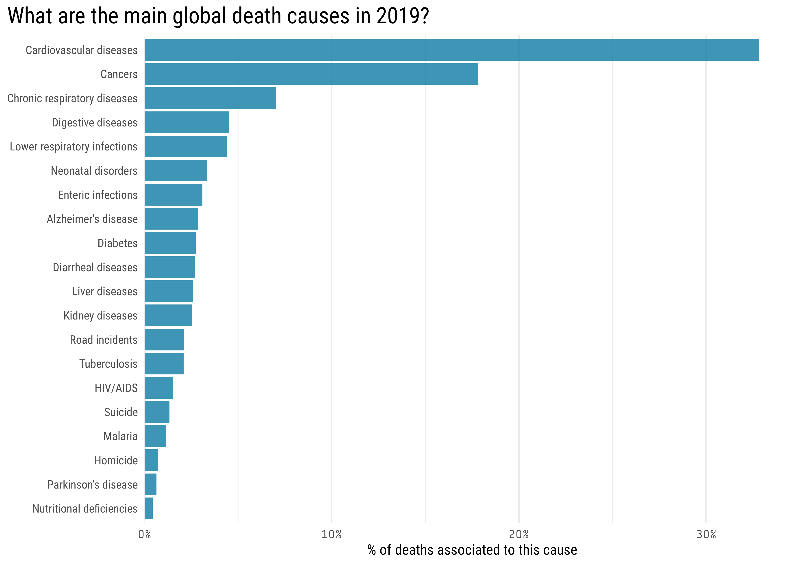
From this first plot we can already draw some interesting conclusions:
Almost \(\frac{1}{3}\) of the global deaths are produced by Cardiovascular diseases (these include hypertension ; coronary heart disease ; cerebrovascular disease ; heart failure; and other heart diseases)
The second most common death cause with 18% of the total is Cancer (this category include all sort of cancers).
The most common death causes are all noncommunicable diseases, which are responsible for 74% of all deaths worldwide.
You are more likely to be killed by yourself (Suicide) that by someone else (Homicide).
In the dataset we also have death causes aggregated by the world bank income categories, which are:
Low income countries
Lower middle income countries
Upper middle income countries
High income countries
A first hypothesis might be that people of different incomes die of different causes, let’s use this data to explore this possibility
mortality_by_region %>%filter(str_detect(region, "Income"), year ==max(year)) %>%filter(fct_lump(death_cause, 12, w = percent_affected) !="Other") %>%mutate(death_cause =fct_reorder(death_cause, percent_affected, sum)) %>%ggplot(aes(percent_affected, death_cause, fill = death_cause)) +geom_col(show.legend =FALSE) +facet_wrap(~ region, scales ="free_y") + MetBrewer::scale_fill_met_d("Renoir") +scale_x_continuous(labels = scales::percent_format()) +labs(title ="Main global death causes in 2019 by income category",y =NULL,x ="% of deaths associated to this cause") +theme(axis.text.x =element_text(family ="Tabular"),plot.title =element_text(size =20),plot.title.position ="plot",panel.grid.major.y =element_blank(),panel.grid.minor.x =element_blank())
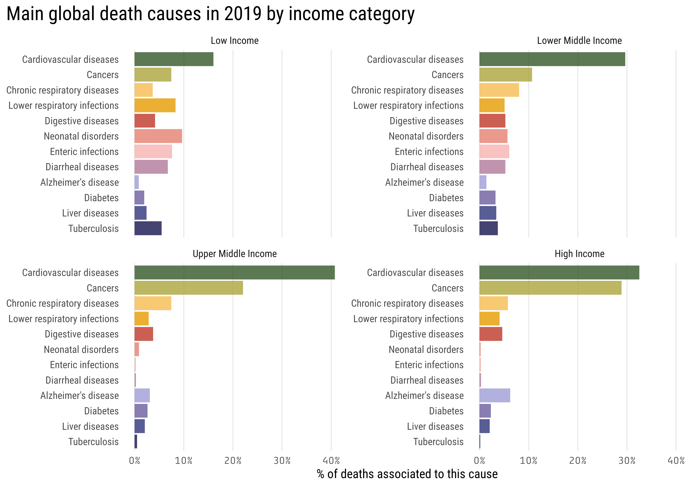
This second plot looks more interesting than the previous one, another way of visualizing this data could be faceting by disease and make a line plot with the income category in the x axis and the percent of deaths in the y axis:
mortality_by_region %>%filter(str_detect(region, "Income"), year ==max(year)) %>%arrange(region) %>%mutate(region =str_wrap(region, 6),region =fct_inorder(region)) %>%filter(fct_lump(death_cause, 12, w = percent_affected) !="Other") %>%mutate(death_cause =fct_reorder(death_cause, percent_affected, sum, .desc =TRUE)) %>%ggplot(aes(region, percent_affected, group = death_cause)) +geom_line() +geom_point() +scale_y_continuous(labels = scales::percent_format()) +facet_wrap( ~ death_cause, scales ="free_y") +expand_limits(y =0) +geom_smooth(method ="lm", se =FALSE) +labs(title ="Main global death causes in 2019 by death cause",subtitle ="Only considering the 12 most common death causes sorted in descending order",y ="% of deaths associated to this cause",x =NULL ) +theme(axis.text.y =element_text(family ="Tabular"),plot.title =element_text(size =20),plot.title.position ="plot",panel.grid.minor.y =element_blank(),strip.text =element_text(size =10))
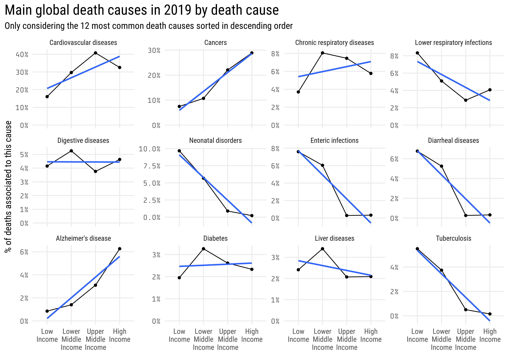
I added a geom_smooth, which helps us fitting a trend line over the data. In this case, with the argument method = "lm" it fits a linear regression, which is why we see a straight blue line.
From these two plots, we can extract valuable insights:
The percent of deaths related with cardiovascular diseases, cancers and alzheimer’s disease increase with the country’s income.
Neonatal disorders, enteric infections and diarrheal diseases related deaths decrease (and are practically null) in countries with higher income.
Around 5% of people in low income countries die of tuberculosis, even though the BCG vaccine to protect against this disease was introduce in 1921! Probably this topic requires some deeper analysis to understand if the vaccine is being administered in these countries or not.
Diabetes, liver and digestive diseases affect in similar proportions at all the categories.
Respiratory diseases show weak trends, looks like Chronic respiratory diseases increase with the income category while the lower respiratory infections decrease.
Seems like there is a correlation between income and death causes. So far we’ve been working with aggregated data by income category, these income categories are based on the gross national income (GNI) of the country, as explained in this artice.
We could perform a more thorough analysis If we’d have access to the countries GNI. Using the {WDI} package, we can download the gross domestic product (GDP) per capita (correlated with GNI) for each country in the period of analysis (1990 - 2019)
library(WDI)# These are the indicators that will be downloaded with the WDI packageindicators <-c("gdp_pcap"="NY.GDP.PCAP.CD")wdi_data_raw <-WDI(indicator = indicators,start =1990,end =2019,extra =TRUE ) %>%as_tibble() %>%arrange(country, year)wdi_data <- wdi_data_raw %>%mutate(income =str_to_title(income),income =fct_relevel(income, income_categories)) %>%group_by(country) %>%fill(gdp_pcap, .direction ="downup") %>%ungroup()mortality_by_country_wdi <- mortality_by_country %>%left_join(wdi_data %>%select(-country),by =c("country_code"="iso3c", "year"))mortality_by_country_wdi %>%filter(year ==2019) %>%head() %>% knitr::kable()
country
country_code
year
death_cause
percent_affected
iso2c
gdp_pcap
status
lastupdated
region
capital
longitude
latitude
income
lending
Afghanistan
AFG
2019
Cardiovascular diseases
0.2462
AF
494.1793
2022-09-16
South Asia
Kabul
69.1761
34.5228
Low Income
IDA
Afghanistan
AFG
2019
Cancers
0.0843
AF
494.1793
2022-09-16
South Asia
Kabul
69.1761
34.5228
Low Income
IDA
Afghanistan
AFG
2019
Drowning
0.0067
AF
494.1793
2022-09-16
South Asia
Kabul
69.1761
34.5228
Low Income
IDA
Afghanistan
AFG
2019
Maternal disorders
0.0160
AF
494.1793
2022-09-16
South Asia
Kabul
69.1761
34.5228
Low Income
IDA
Afghanistan
AFG
2019
Chronic respiratory diseases
0.0281
AF
494.1793
2022-09-16
South Asia
Kabul
69.1761
34.5228
Low Income
IDA
Afghanistan
AFG
2019
Alcohol disorders
0.0006
AF
494.1793
2022-09-16
South Asia
Kabul
69.1761
34.5228
Low Income
IDA
How does change in GDP affects death causes?
Now that we have data on the GDP per capita for each country, we can build a model to predict the percent_affected using gdp_pcap as the predictor.
Notice that we have different death causes. In this case, I would like to get a coefficient that explains \[\%affected \sim GDPpercapita\] for each death cause, that’s why I will fit one model per death cause.
This is easy to do with the {purrr} package, which let us implement functional programming concepts within the tidyverse. To read more about this topic, here are the vignettes of the package. Also, in the R for Data Science book you can find a chapter dedicated to fitting many models explaining these concepts.
Before creating our models, I will check the distribution of our predictor
mortality_by_country_wdi %>%filter(death_cause =="Cardiovascular diseases") %>%ggplot(aes(gdp_pcap)) +geom_histogram() +scale_x_log10(labels = scales::dollar_format()) +labs(x ="GDP per capita in current US$ (log-scale)",title ="Distribution of GDP per capita") +theme(axis.text =element_text(family ="Tabular"),plot.title =element_text(size =20),plot.title.position ="plot",panel.grid.minor.y =element_blank())
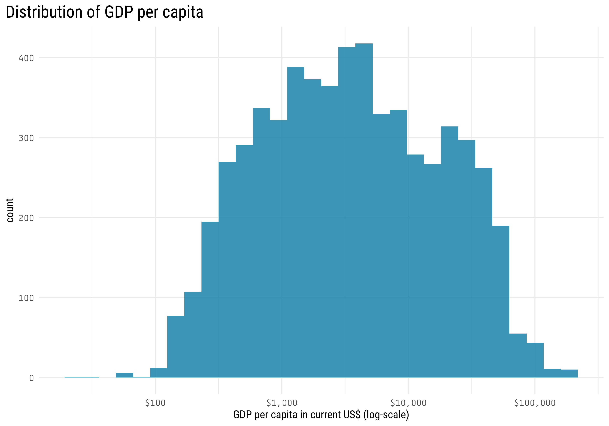
Notice that GDP per capita has an approximate log-normal distribution, so I will apply a transformation (log2) to the predictor before fitting the model
What about the response variable?
mortality_by_country_wdi %>%filter(year ==max(year),fct_lump(death_cause, 12, w = percent_affected) !="Other") %>%ggplot(aes(percent_affected)) +geom_histogram() +facet_wrap(~ death_cause, scales ="free") +scale_x_log10(labels = scales::percent_format()) +labs(x ="% of deaths (log-scale)",title ="Distribution of % of deaths by cause") +theme(axis.text =element_text(family ="Tabular"),plot.title =element_text(size =20),plot.title.position ="plot",panel.grid.minor.y =element_blank())
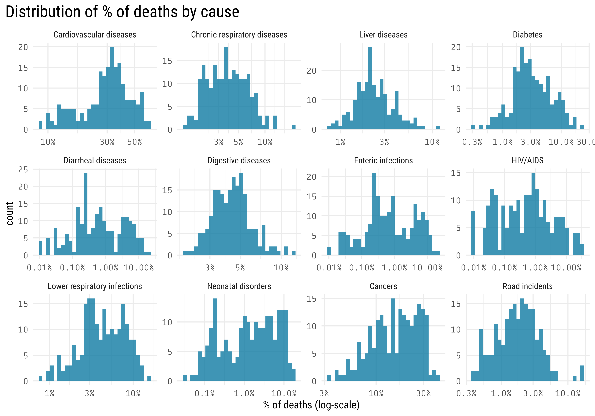
The response variable also look log-normal distributed.
If we want to create linear models to predict: \[log(\% affected) \sim \beta_0 + \beta_1log(GDPpercapita) + \epsilon\] It can be done with the lm() function. The problem with having both variables (dependent and independent) transformed by the log function is that it would be harder to interpret the coefficients (\(\beta_1\)) of the model. That’s why I will start by fitting a simpler model of the form: \[\% affected \sim \beta_0 + \beta_1log(GDPpercapita) + \epsilon\] In this case, our dependent variable is a percentage, that means that it can take values in the range \([0, 1]\). For this reason, a beta regression could be a good alternative to the linear regression. The advantage of the beta regression is that the output will always be in the mentioned range. The disadvantage is that it applies a transformation to the output (the logit function), and again, as with the log transformation, it would be harder to interpret the coefficients of the model. So, let’s fit some linear models and analyze their performance.
mortality_model <- mortality_by_country_wdi %>%filter(year ==max(year), between(percent_affected, 0, 1), gdp_pcap >0) %>%group_by(death_cause) %>%nest() %>%mutate(model =map(data, ~lm(percent_affected ~log2(gdp_pcap), data = .)),rsquared =map_dbl(model, ~summary(.)$r.squared),tidy_model =map(model, broom::tidy, conf.int =TRUE) ) %>%unnest(tidy_model) %>%ungroup()mortality_model %>%filter(term !="(Intercept)") %>%mutate(death_cause =fct_reorder(death_cause, estimate)) %>%ggplot(aes(estimate, death_cause)) +geom_point() +geom_errorbar(aes(xmin = conf.low, xmax = conf.high), width =0.5) +geom_vline(xintercept =0, lty =2) +scale_x_continuous(labels = scales::percent_format()) +labs(title ="How does change in GDP affects death causes in 2019?",subtitle ="Considering 199 countries. Error bars indicate 95% confidence interval",x ="% change in death cause for each time GDP per capita doubles",y ="Death cause") +theme(axis.text.x =element_text(family ="Tabular"),plot.title =element_text(size =20),plot.subtitle =element_text(color ="gray50"),plot.title.position ="plot",panel.grid.minor.y =element_blank(),strip.text =element_text(size =10))
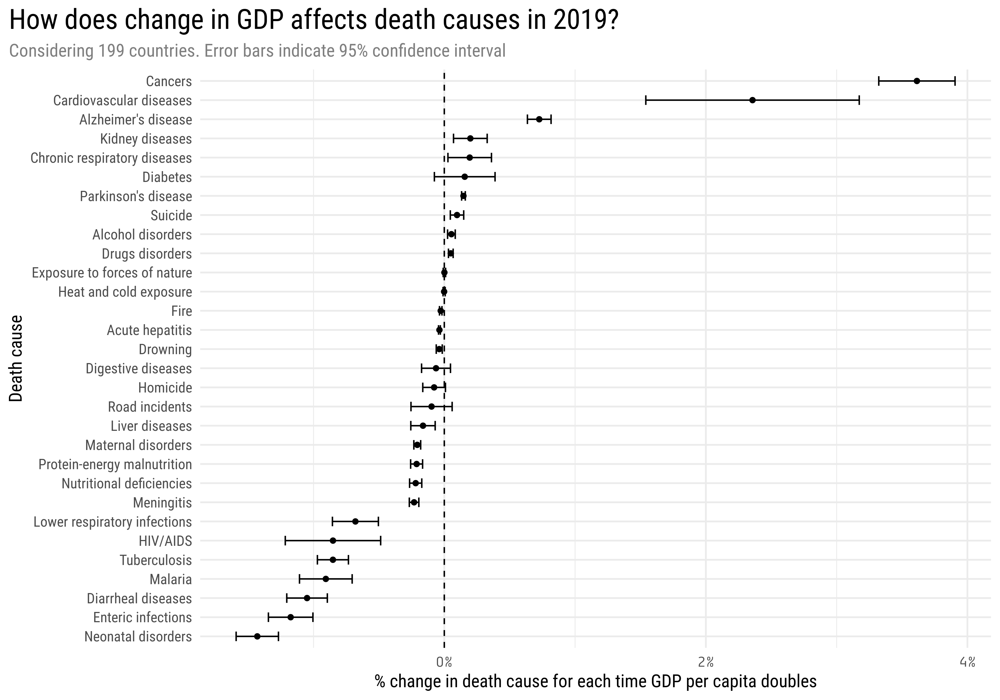
There is a lot of information in this plot:
The coefficients represent the change in the outcome for every time the GDP per capita doubles. For example: Cancers have a coefficient of 0.0361 (3.6%). Suppose we have a country with GDP per capita of US$ 10.000 and 10% of deaths are caused by cancer. If the GDP of the country doubles, going from US$ 10.000 to US$ 20.000, then the deaths caused by cancer are estimated to change from 10% to 13.6%
The error bars shows the 95% confidence intervals. This mean that for those death causes whose error bars overlap 0% we don’t have enough evidence (with a significance level \(\alpha\) = 0.05) to say that change in GDP affects them. If we filter them out, we get this plot
mortality_model %>%filter(term !="(Intercept)", p.value <0.05) %>%mutate(death_cause =fct_reorder(death_cause, estimate)) %>%ggplot(aes(estimate, death_cause)) +geom_point() +geom_errorbar(aes(xmin = conf.low, xmax = conf.high), width =0.5) +geom_vline(xintercept =0, lty =2) +scale_x_continuous(labels = scales::percent_format()) +labs(title ="How does change in GDP affects death causes in 2019?",subtitle ="Considering 199 countries. Error bars indicate 95% confidence interval",x ="% change in death cause for each time GDP per capita doubles",y ="Death cause") +theme(axis.text.x =element_text(family ="Tabular"),plot.title =element_text(size =20),plot.subtitle =element_text(color ="gray50"),plot.title.position ="plot",panel.grid.minor.y =element_blank(),strip.text =element_text(size =10))
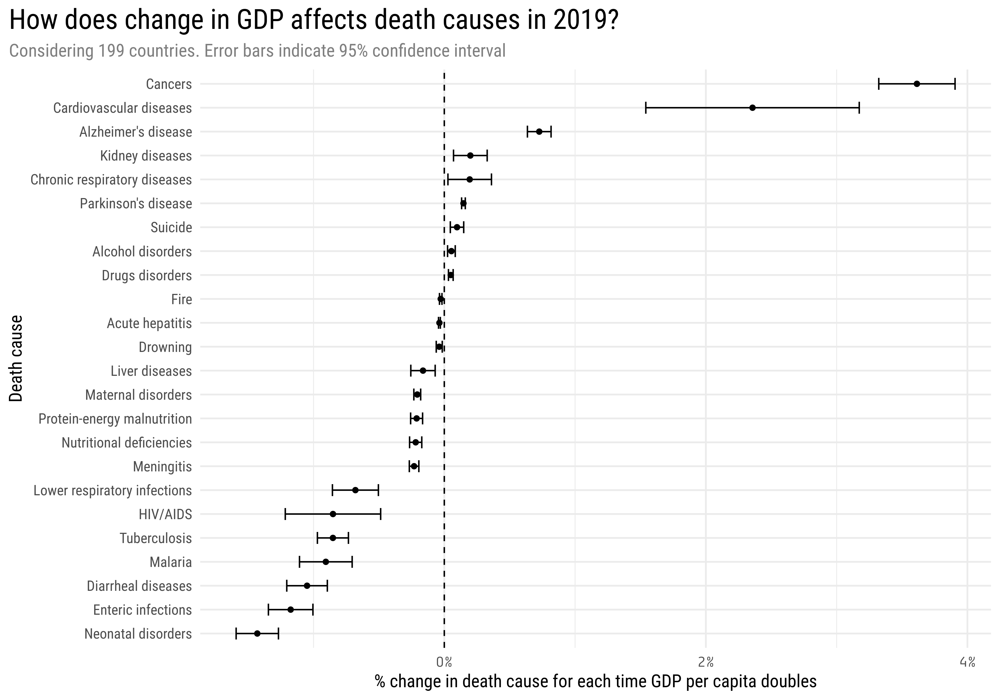
What does the relationship between GDP per capita and % of deaths looks like in a scatter plot?
library(glue)library(ggtext)mortality_model %>%filter(term !="(Intercept)", p.value <0.05) %>%slice_max(abs(estimate), n =12) %>%mutate(augmented_model =map(model, broom::augment),death_cause =str_replace(death_cause, "-energy", ""),death_cause =glue("{death_cause} (*R*<sup>2</sup> = {round(rsquared, 2)})"),death_cause =fct_reorder(death_cause, estimate, first, .desc =TRUE) ) %>%unnest(augmented_model) %>%mutate(gdp_pcap =2^(`log2(gdp_pcap)`)) %>%ggplot(aes(gdp_pcap, percent_affected)) +geom_point(alpha =0.5) +geom_line(aes(y = .fitted), color ="red", alpha =0.8, lty =2, linewidth =1.4) +scale_x_log10(labels = scales::dollar_format()) +scale_y_continuous(expand =c(0,0),labels = scales::percent_format(),limits =c(0, NA)) +facet_wrap( ~ death_cause, scales ="free_y") +theme_minimal(base_family ="Roboto Condensed", base_size =12) +labs(title ="How does GDP per capita correlates with different death causes by country in 2019?",subtitle ="Only the 12 deaths causes that change the most with countries GDP's. y-axis scales are different for each plot. Sorted by descending slope",x ="GDP per capita in current US$ (log-scale)",y ="% of deaths for this cause" ) +theme(strip.text =element_markdown(face ="bold", size =10),plot.title.position ="plot",plot.title =element_text(size =20),plot.subtitle =element_text(size =10) )
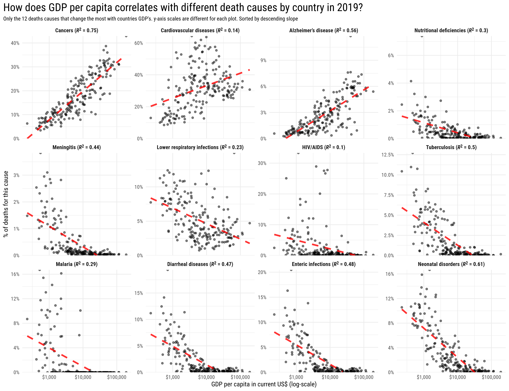
In this plot, the red dashed line represents the predictions of our linear model. Notice that the x axis is in log scale, and since we fit the model with a log scaled predictor, it makes sense that it predicts a straight line.
Looks like this last plot confirms all our previous assumptions. Countries with higher incomes are more likely to have people dying of cancer, cardiovascular diseases and alzheimer’s disease, all these being noncommunicable diseases.
On the other hand, in countries with low income, you are more likely to die of tuberculosis, malaria, diarrheal diseases, enteric infections and neonatal disorders, all these are diseases that have treatment and in most cases could be avoided with a better hygiene and access to clean water, that’s why the probability of dying for this causes in higher income countries is almost zero.
So, the conclusion we drawn from the analysis is that money produces cancer? That doesn’t sound right… It’s important to highlight that age of death was never considered in this analysis, and a more reasonable hypothesis would be that people dying of cancer live longer than those dying of neonatal disorder. In this case, a more accurate conclusion might be: money allows you to live enough to die of cancer.
Now we know what produced deaths around the world in 2019, another interesting question is: Have the death causes proportions been changing over the years within country? Is it more or less likely to die of communicable diseases nowadays than 30 years ago?
Change in death causes over the years
In this part of the analysis, I think the best way to visualize the data is with maps.
As a starting point, let’s plot the main death cause by country in 2019
library(rnaturalearth)library(sf)world <-ne_countries(scale ="medium", returnclass ="sf") %>%filter(name !="Antarctica")mortality_by_country %>%filter(year ==2019) %>%group_by(country, year) %>%slice_max(percent_affected, n =1, with_ties =FALSE) %>%ungroup() %>%right_join(world, by =c("country_code"="iso_a3")) %>%mutate(death_cause =str_wrap(death_cause, 20),death_cause =as.character(death_cause) ) %>%replace_na(list(death_cause ="Unknown")) %>%mutate(death_cause =fct_reorder(death_cause, -percent_affected, sum)) %>%ggplot() +geom_sf(aes(fill = death_cause, geometry = geometry), size =0.15) + MetBrewer::scale_fill_met_d("Renoir", direction =-1) + ggthemes::theme_map(base_family ="Roboto Condensed") +labs(title ="Which is the main death cause per country in 2019?",fill =NULL) +theme(legend.position ="bottom",legend.justification ="bottom",plot.title =element_text(size =20, face ="bold"),legend.text =element_text(size =10),legend.key.width =unit(20, "mm"),legend.key.height =unit(3, "mm") ) +guides(fill =guide_legend(label.position ="bottom",nrow =1))
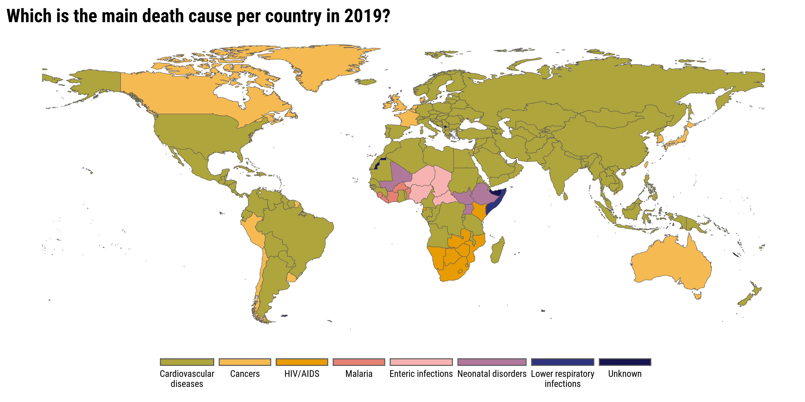
Cardiovascular diseases is the most common death cause in most countries, as we have already seen in the first plot of this post. Communicable diseases are the most common death cause in many African countries.
Principal Component Analysis
In this dataset we have 32 different death causes, though some are much common than others, that’s a lot of data to visualize. There is a great tool that can help us in this case: principal component analysis (PCA). From Wikipedia:
Principal component analysis (PCA) is a popular technique for analyzing large datasets containing a high number of dimensions/features per observation, increasing the interpretability of data while preserving the maximum amount of information, and enabling the visualization of multidimensional data. Formally, PCA is a statistical technique for reducing the dimensionality of a dataset. This is accomplished by linearly transforming the data into a new coordinate system where (most of) the variation in the data can be described with fewer dimensions than the initial data. Many studies use the first two principal components in order to plot the data in two dimensions and to visually identify clusters of closely related data points.
The PCA could be done using the prcomp function from the {stats} package. Here is the implementation
library(countrycode)mortality_pca <- mortality_by_country %>%filter(year ==max(year)) %>%select(-year, -country) %>%pivot_wider(names_from = death_cause, values_from = percent_affected) %>% janitor::clean_names() %>%column_to_rownames("country_code") %>%prcomp(scale. =TRUE)broom::tidy(mortality_pca, "d") %>%filter(cumulative <0.9) %>%ggplot(aes(x = PC)) +geom_col(aes(y = percent)) +geom_line(aes(y = cumulative)) +geom_point(aes(y = cumulative)) +scale_y_continuous(labels = scales::percent_format()) +scale_x_continuous(breaks =1:13,limits =c(0.5, 13.5),expand =c(0, 0) ) +geom_text(aes(y = percent,label = scales::percent(percent, accuracy = .01) ), nudge_y =0.02, family ="Tabular") +labs(title ="What percentage of variation in the data is explained by each principal component?",y =NULL,x ="Principal component",subtitle ="Only the first 13 components plotted, which account for 90% of the variance in the data") +theme(axis.text =element_text(family ="Tabular"),plot.title =element_text(size =20),plot.title.position ="plot",panel.grid.minor.x =element_blank(),panel.grid.major.x =element_blank() )
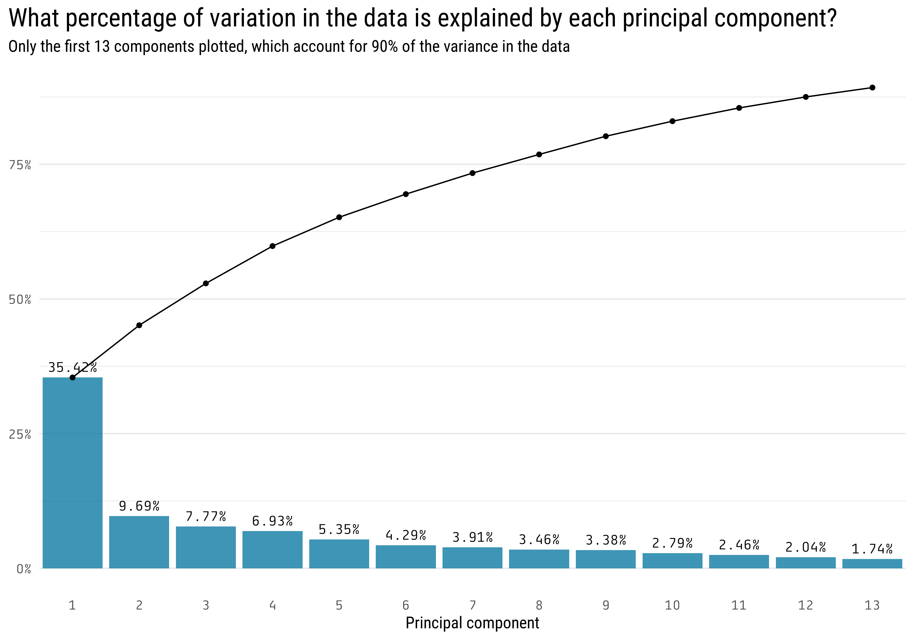
The first 2 components almost explain 50% of the variance in the data, this means that we can replace the original 32 columns with only 2, and still explain 50% of the variability of the data. The advantage of having only 2 columns is that we can plot that in a scatter plot.
broom::tidy(mortality_pca) %>%filter(PC <3) %>%pivot_wider(names_from = PC, values_from = value) %>%set_names(c("country_code", "PC1", "PC2")) %>%mutate(continent = countrycode::countrycode(country_code, "iso3c", "continent"),country = countrycode::countrycode(country_code, "iso3c", "country.name"),country =str_remove_all(country, "\\s\\(.*|\\s-.*")) %>%ggplot(aes(PC1, PC2)) +geom_text(aes(label = country, color = continent), check_overlap =TRUE, key_glyph ="point") +scale_color_brewer(palette ="Set1") +labs(color ="Continent",title ="How are countries distributed in the plane of the first two principal components?") +theme(axis.text =element_text(family ="Tabular"),plot.title =element_text(size =20),plot.title.position ="plot")
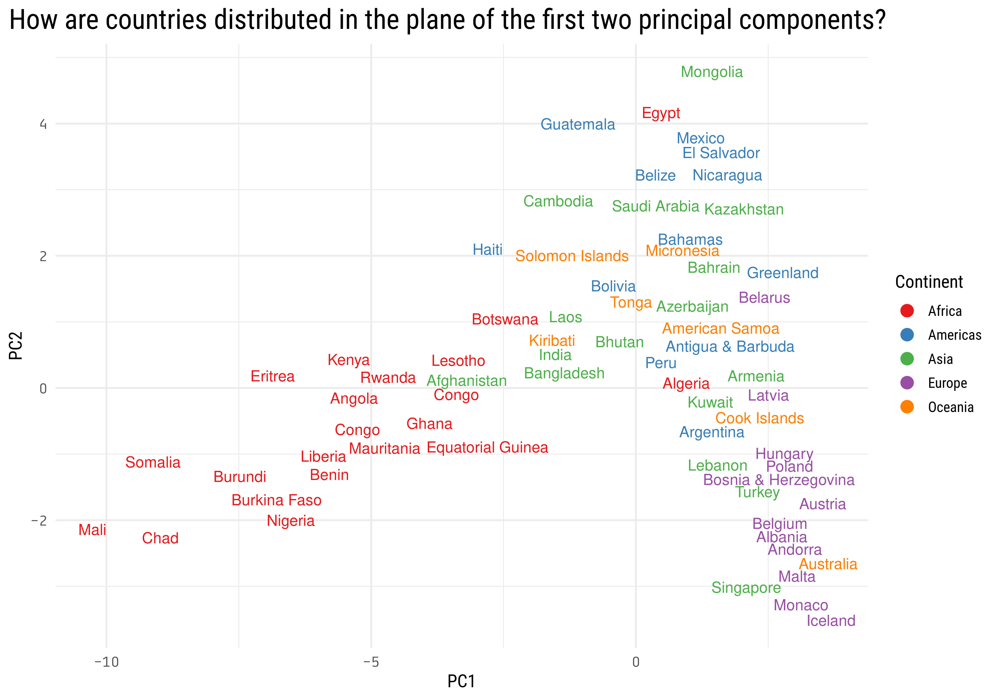
We can see some geographical clustering here, looks like most of the African countries are on the left side, having a more negative PC1. On the right bottom corner we find most of the European countries, Singapore and Australia.
What death causes contributes the most to the principal components?
Cluster analysis or clustering is the task of grouping a set of objects in such a way that objects in the same group (called a cluster) are more similar (in some sense) to each other than to those in other groups (clusters). Cluster analysis itself is not one specific algorithm, but the general task to be solved. It can be achieved by various algorithms that differ significantly in their understanding of what constitutes a cluster and how to efficiently find them. Popular notions of clusters include groups with small distances between cluster members, dense areas of the data space, intervals or particular statistical distributions. Clustering can therefore be formulated as a multi-objective optimization problem.
In summary, clustering consists on finding groups in the data.
With the help of the {factoextra} package we can easily plot total within sum of square vs the number of clusters. This help us to select the number of clusters (\(k\)) using the elbow method. In this case, a value of \(k\) in the range \([2,4]\) looks reasonable, I will choose \(k = 3\).
Now we need to select which algorithm we want to use. I will use k-means algorithm, one of the simplest one.
This is the same visualization we did before in the PCA analysis, but now the colors represent the clusters. What’s the location of the centers of the clusters?
km.res$centers %>%as_tibble() %>%rownames_to_column("cluster") %>%pivot_longer(-cluster) %>%group_by(cluster) %>%slice_max(abs(value), n =15) %>%ungroup() %>%mutate(name =str_to_sentence(str_replace_all(name, "_", " "))) %>%mutate(name = tidytext::reorder_within(name, value, cluster),cluster =paste("Cluster",cluster)) %>%ggplot(aes(value, name)) +geom_col() +facet_wrap(~ cluster, scales ="free_y", nrow =1) + tidytext::scale_y_reordered() +labs(title ="Location of the centers of the clusters",y =NULL) +theme(axis.text.x =element_text(family ="Tabular"),plot.title =element_text(size =20),plot.title.position ="plot",strip.text =element_text(size =12) )
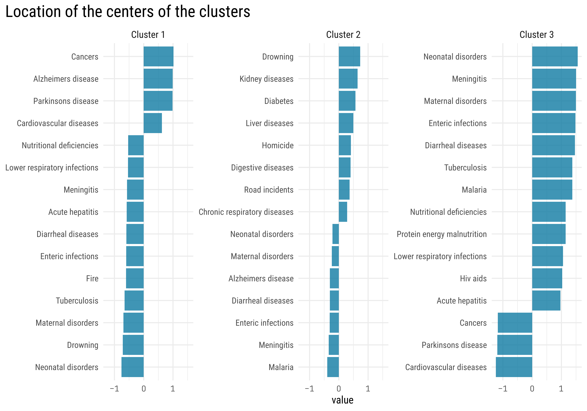
Finally, let’s visualize the clusters in a world map
All the African countries are either in cluster 2 or 3. Most of the European countries, the United States, Canada, China, Argentina and Australia are in cluster 1. This might indicate a correlation between cluster assignment and GDP per capita of the country. A good visualization in this case is a simple cross tabulation table, with counts of cluster and income category
wdi_data %>%filter(year ==max(year)) %>%inner_join(country_cluster, by =c("iso3c"="country_code")) %>%filter(income !="Not Classified",!is.na(income)) %>%count(income, .cluster) %>%mutate(income =str_to_title(income),income =fct_relevel(income, income_categories)) %>%ggplot(aes(.cluster, income, fill = n)) +geom_tile(show.legend =FALSE) +geom_text(aes(label = n), color ="white") + MetBrewer::scale_fill_met_c("Demuth", direction =-1) +labs(title ="How do Income categories relate with clusters?",x ="Cluster #",y =NULL) +theme(panel.grid =element_blank(),plot.title =element_text(size =20),plot.title.position ="plot" )
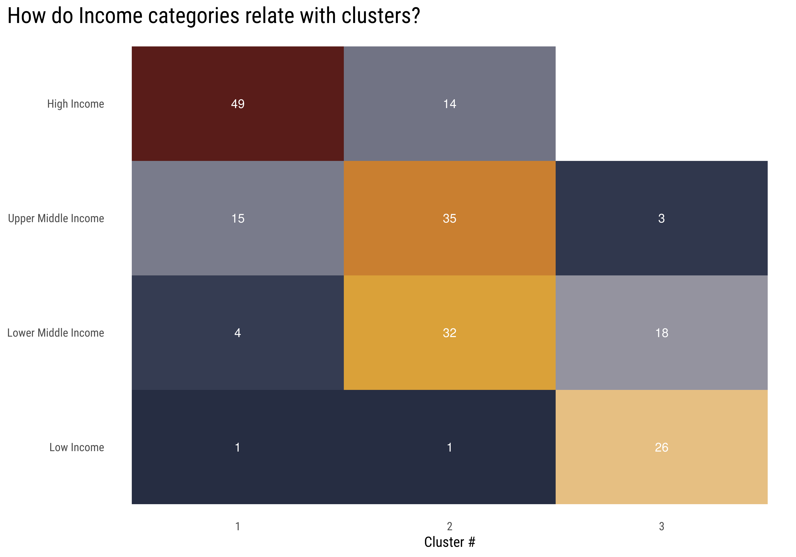
This is interesting! The clusters model had no clue of the countries income during the fit, the only data it was trained on was the percent of deaths for each of the 32 causes in our dataset. Nevertheless, we find this great correlation between clusters and income categories, which ratify all the conclusions we have made so far in the analysis: GDP per capita is highly correlated with how people die.
For the next section I will add an income label to the clusters, I think it will make it easier to follow the analysis:
Cluster 1 ~ High Income
Cluster 2 ~ Middle Income
Cluster 3 ~ Low Income
Now we are in conditions of trying to find an answer to the question we begin with: How does death causes have change over the years?
This is the process I will go through:
Train a classification model (XGBgboost) to predict the assigned cluster with the 2019 data, same data used to train the kmeans algorithm.
Use the XGBoost model to predict the cluster for the previous years (1990 - 2018)
Visualize how cluster assignment have change for each country over the years
For the XGBoost model I will use the {tidymodels} package, which facilitates the process of doing machine learning using tidyverse principles. It allows us to easily tune a model and evalate the results, here is the implementation:
library(tidymodels)library(xgboost)mortality_wide <- mortality_by_country %>%pivot_wider(names_from = death_cause, values_from = percent_affected) %>% janitor::clean_names() %>%select(-conflict, -terrorism) # I leave out these death causes because there is almost no data for the majority of the countriesmortality_cluster_2019 <- mortality_wide %>%filter(year ==max(year)) %>%left_join(country_cluster, by ="country_code") %>%mutate(.cluster =case_when( .cluster =="1"~"Cluster 1 ~ High Income", .cluster =="2"~"Cluster 2 ~ Middle Income", .cluster =="3"~"Cluster 3 ~ Low Income",TRUE~"Other" ))clusters_levels <-c("Cluster 1 ~ High Income", "Cluster 2 ~ Middle Income", "Cluster 3 ~ Low Income")mortality_folds <-bootstraps(mortality_cluster_2019, times =15)xgb_rec <-recipe(.cluster ~ ., data = mortality_cluster_2019) %>%update_role(country, country_code, year, new_role ="id") %>%step_normalize(all_numeric_predictors()) %>%step_pca(all_numeric_predictors(), num_comp =tune())xgb_spec <-boost_tree(trees =tune(),min_n =tune(),mtry =tune(),tree_depth =tune()) %>%set_engine("xgboost") %>%set_mode("classification")xgb_wf <-workflow(xgb_rec, xgb_spec)grid <-grid_latin_hypercube(trees(),min_n(),tree_depth(),finalize(num_comp(), mortality_cluster_2019),finalize(mtry(), mortality_cluster_2019), size =15) %>%mutate(num_comp =pmin(num_comp, 30))doParallel::registerDoParallel(cores =2)xgb_rs <-tune_grid( xgb_wf,resamples = mortality_folds,grid = grid,control =control_grid(verbose =TRUE))xgb_rs %>%autoplot() +theme_light() +labs(title ="Results of the model hyperparameter selection") +theme(plot.title.position ="plot",plot.title =element_text(size =15))
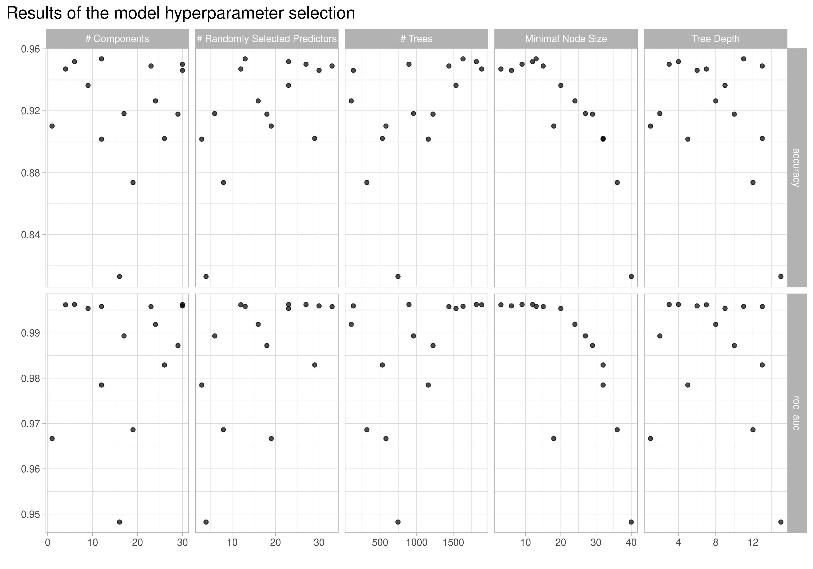
This plot shows the accuracy and ROC AUC metrics for the different hyperparameters we tune it on. We can see that in almost all cases the accuracy is higher than 90% and the ROC AUC score is around 98%, really good for a model. I don’t want to go deeper in hyperparameter tuning since it’s not the point of this post, I will just select the best model and continue.
That’s what we wanted, a dataframe with the country, the year and the predicted cluster. Now we can make an animated visualization using the {gganimate} package
clusters_animation <- world %>%left_join(mortality_wide_clusters, by =c("iso_a3"="country_code")) %>%filter(!is.na(.pred_class)) %>%mutate(.pred_class =fct_relevel(.pred_class, !!!clusters_levels)) %>%ggplot() +geom_sf(aes(fill = .pred_class), size =0.15) + ggthemes::theme_map(base_family ="Roboto Condensed") + MetBrewer::scale_fill_met_d("Egypt", direction =-1) +labs(title ="Countries clustered in {current_frame}",fill ="Cluster") + gganimate::transition_manual(year) +theme(plot.title =element_text(size =rel(2), face ="bold"),legend.text =element_text(size =10),legend.key.width =unit(4,"mm"), )gganimate::anim_save("posts/global-mortality-analysis/animation.gif", clusters_animation, width =1000, height =500, fps =6)
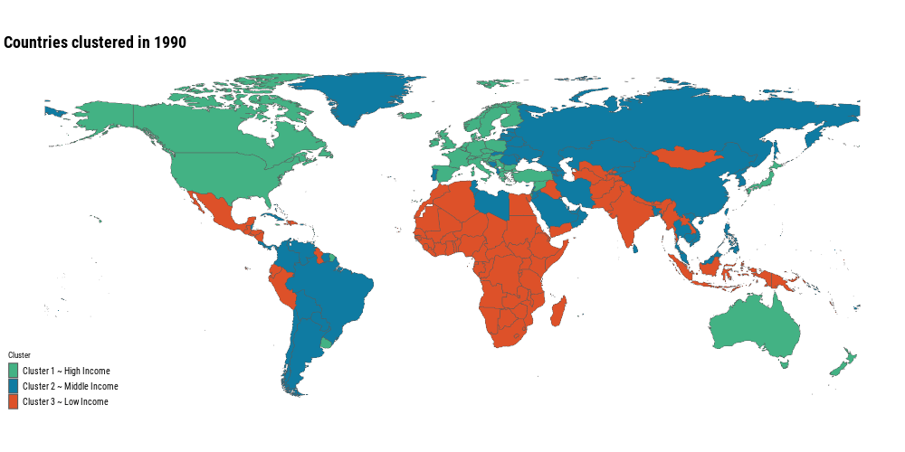
Most of the countries have been moving from the low income level cluster to the high income level cluster, that’s great news! It means that even though nowadays we have a noticeable difference in causes of deaths around the world, the trend is positive. Neonatal disorders, meningitis, enteric infections, etc. are now less common than 30 years ago!
This is another visualization to show these change in clusters
years <-seq(1990, 2015, 5)mortality_wide_clusters %>%filter(year %in% years) %>%count(year, .pred_class) %>%ggplot(aes(year, n, fill = .pred_class)) +geom_col() +scale_x_continuous(breaks = years) + MetBrewer::scale_fill_met_d("Egypt", direction =-1) +labs(fill ="Cluster:",y ="Count",x =NULL) +theme(axis.text =element_text(family ="Tabular"),panel.grid.minor.y =element_blank(),panel.grid.major.x =element_blank(),panel.grid.minor.x =element_blank())
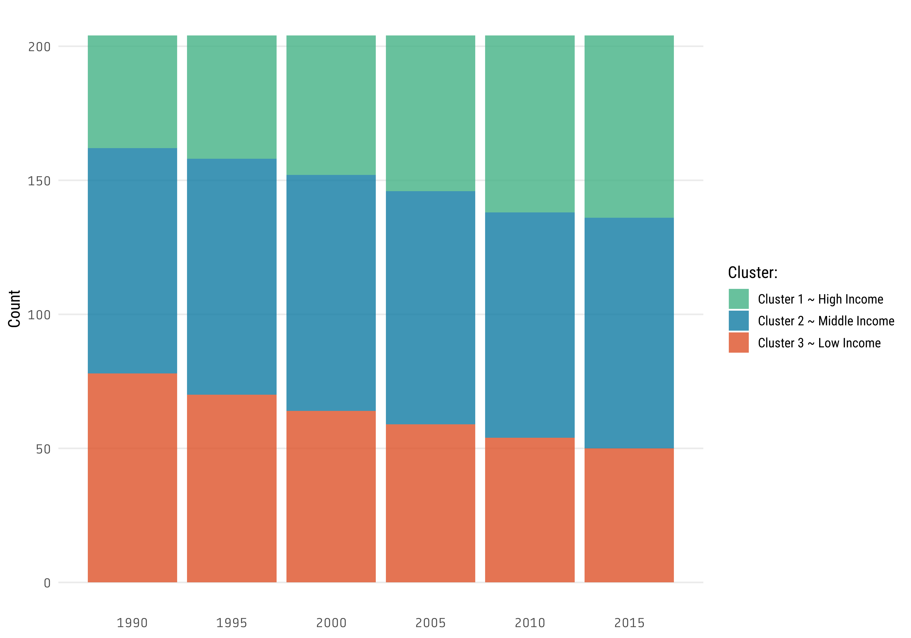
So, the trend is clear, communicable diseases are becoming a less frequent death cause over the time.
This is the end of this post, I hope you have found it helpful. I try to use different tools and methods through all the exploration. Although I didn’t explain the code, the idea of the post is that you can see the implementation of the tools in a context of an exploratory data analysis, copy the code that you find useful, and use it in your own analysis.
As a conclusion, the main insights extracted from the data are:
Cardiovascular diseases account for almost a third of the global deaths.
Noncommunicable diseases account for 74% of the global deaths.
People who live in countries with higher GDP per capita are more likely to die of Cardiovascular diseases, Cancers and alzheimer’s disease, and less likely to die of tuberculosis, malaria, enteric infections and many other communicable diseases.
Lastly, the most important, global trends are changing over time. Global health is getting better over the years, hopefully there will be a time when all the death causes that were eradicated in high income countries will also cease to exist in lower income countries.